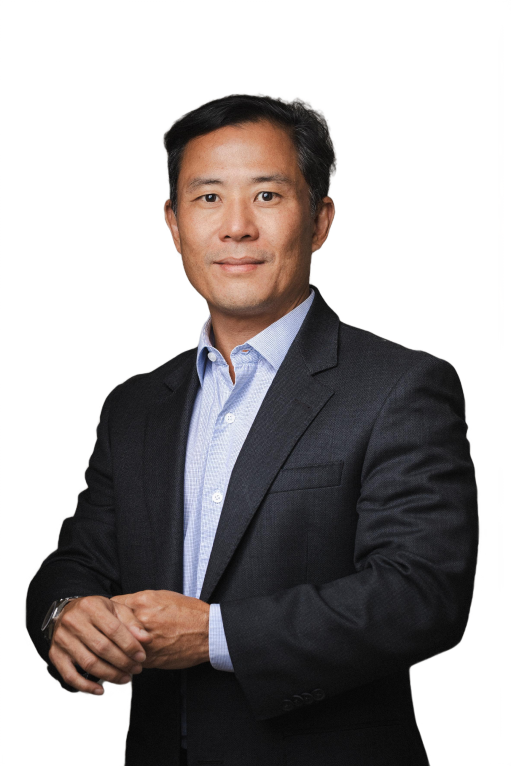

Mastopexia com Prótese Estruturada
Indicada para mamas com flacidez e auréolas caídas, combinada ao uso de prótese de silicone.
Cirurgia Plástica da Mama · Salvador
Mais de 4.500 cirurgias realizadas, técnica avançada e planejamento individual — da mastopexia à mamoplastia, sempre com acompanhamento próximo antes e depois da cirurgia.

Um cirurgião plástico que se tornou referência para cirurgias de mama na Bahia e no Brasil.
O cirurgião
O Dr. Claudio Matsumoto formou-se em Medicina em 1999 pela Universidade Federal da Bahia (UFBA), iniciou a carreira em cirurgia geral e se especializou em cirurgia plástica no Hospital dos Servidores do Estado, no Rio de Janeiro.
Aprimorou a técnica em centros de referência como a Clínica Ivo Pitanguy (RJ), o Hospital Santa Cruz e a Clínica Raul Gonzales (SP), e atuou por dois anos na Clínica de Cirurgia Plástica do Rio de Janeiro. De volta a Salvador em 2007, concentrou sua atuação especificamente na cirurgia plástica da mama — mastopexia, mamoplastia e reconstrução com prótese.
Procedimentos
A indicação é sempre definida em consulta, depois de uma avaliação cuidadosa da sua anatomia e dos seus objetivos.
Indicada para mamas com flacidez e auréolas caídas, combinada ao uso de prótese de silicone.
Técnica avançada e completa de suspensão da mama em casos de flacidez, associada à prótese.
Técnicas e materiais que possibilitam uma recuperação pós-operatória mais rápida e confortável.
Foco não apenas no resultado estético, mas na manutenção do formato ao longo do tempo.
Reforço adicional de musculatura lateral do tórax para maior sustentação da prótese.
Redução do volume mamário para aliviar o impacto na postura, no conforto e na rotina.
O protocolo dos 14 pontos e o conceito de clivagem são aplicados para reduzir complicações e valorizar o colo da mama. Cada indicação cirúrgica é definida em consulta, após avaliação médica individual — resultados variam de pessoa para pessoa.
Avaliações reais · Google
Minha experiência com o Dr. Cláudio Matsumoto foi simplesmente maravilhosa! Estou super feliz e realizada com o resultado da minha mastopexia com prótese... Desde a primeira consulta, ele me passou muita confiança demonstrando muito conhecimento, segurança e domínio sobre o que estava fazendo.
Dr. Cláudio é um profissional de excelência! Um cirurgião plástico que se tornou referência para cirurgias de mama na Bahia e no Brasil.
Um cirurgião extremamente competente, criterioso e cuidadoso em cada detalhe... Sem dúvida, uma referência em cirurgia plástica de mama.
Dr Cláudio é um excelente profissional, muito atencioso, dedicado, educado, paciente, me senti muito segura com ele.
Consultório
Horário informado pelo Google Meu Negócio da clínica
Caminho das ÁrvoresAv. Antônio Carlos Magalhães, 3244
Salvador · BA
Perguntas frequentes
Na primeira consulta, o Dr. Claudio avalia sua anatomia, ouve suas expectativas e explica as técnicas mais adequadas para o seu caso, com base em duas décadas de experiência focada em cirurgia da mama.
O agendamento é feito diretamente pelo WhatsApp da recepção. Basta chamar e informar o dia de sua preferência.
A condição pode variar. Confirme diretamente com a recepção pelo WhatsApp qual é a disponibilidade para o seu caso.
Na Av. Antônio Carlos Magalhães, 3244, Caminho das Árvores, Salvador. O atendimento é de segunda a quinta, das 9h às 17h, e sexta, das 9h às 15h30.
Sua confiança começa com uma boa conversa
Atendimento de segunda a quinta, das 9h às 17h, e sexta, das 9h às 15h30, no Caminho das Árvores.
Agendar pelo WhatsApp